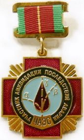
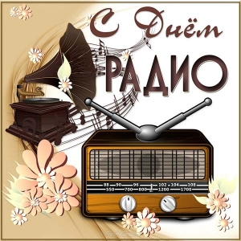

Добро пожаловать на сайт радиолюбителей города Климовичи!
Содержание сайта формируется за счёт
собственных — авторских статей, а
также по реферативному принципу — на основе информации,
собранной в Интернете, тщательно переработанной и систематизированной в
соответствии с той или иной темой.
В случае, если материалы практически не подвергались
переработке, их источники указываются всегда.
Информация для радиолюбителей.
День памяти жертв радиационных аварий и катастроф.

Международный день памяти жертв радиационных аварий и катастроф
отмечается 26 апреля во всём мире. Он был установлен на саммите СНГ в
сентябре 2003 года по инициативе бывшего президента Украины Леонида
Кучмы. Идею поддержали в ООН, призвав своей резолюцией отмечать этот
Международный день и проводить в его рамках соответствующие
мероприятия.
Дата была выбрана не случайно. Именно в этот день случилась ужасная
катастрофа, унесшая множество жизней и оставившая свой след в судьбах
миллионов людей – авария на Чернобыльской АЭС. День чернобыльской
трагедии – это дань уважения всем ветеранам и ликвидаторам техногенных
аварий, которые, рискуя собственной жизнью и здоровьем.
К сожалению, чернобыльские события не стали последней радиоактивной
аварией в истории человечества. 11 марта 2011 года произошло
землетрясение в Японии, в результате которого была повреждена АЭС
«Фукусима-1». Мир замер в ожидании катастрофы, подобной чернобыльской,
однако последствия на этот раз оказались менее страшными, хотя все же
серьёзными. «Фукусима» стала ещё одним предупреждением людям о
необходимости компетентно управлять атомной энергией. Последствия этих
трагедий ощущаются до сих пор. Именно поэтому история аварии и история
преодоления её последствий заслуживают того, чтобы люди об этом знали и
помнили.
18 апреля - Всемирный день радиолюбителей.
Задолго до изобретения Всемирной паутины, когда мгновенное
общение было мечтой, а письмо фактически считалось довольно быстрым
способом общения (вне телефона), существовала группа пионеров, которые
уже обнаружили радость общения с людьми по всему миру посредством
эфира. Какой может быть эта удивительная форма общения? Именно
Любительским Радио!
День любительского радио напоминает нам об этих великих пионерах, их
современных потомках и о том, как радио служит мировому сообществу уже
более 100 лет.
История Дня Любительского Радио
Ещё 18 апреля 1925 года Международный союз радиолюбителей возник в
невероятно космополитичном городе Париже. Эти бесстрашные искатели
приключений обнаружили, что короткие волны, которые любительское радио
использовало для передачи и приема, мог объединить людей во всем мире,
что раньше считалось невозможным. Эта группа радиолюбителей -
экспериментаторов доказала, что эта теория ошибочна, и объединилась,
чтобы проводить кампанию и защищать те диапазоны частот, которые будут
служить сообществу радиолюбителей.
С тех пор IARU неустанно работает над расширением диапазона частот,
доступного для радиолюбителей, и расширился, чтобы включить членов по
всему миру, по последним подсчетам, из 25 стран. Интерес к
любительскому радио только возрос с тех ранних дней, когда более 3
миллионов лицензированных операторов сегодня распространяют свои голоса
по всему миру. Именно благодаря этой среде люди из разных стран и
культур могли распространять идеи с большой скоростью, задолго до того,
как появилась возможность снимать электронную почту или видеочат.
Как отметить День Любительского Радио
IARU проводит мероприятия по всему миру, чтобы отпраздновать это
великое изобретение и собрать людей, которые по-прежнему ценят
возможность использовать радиосигнал через ионосферу за тысячи миль и
объединить две стороны земного шара через мизернуую энергию радиоволны.
Если вы когда-либо видели или работали с ними, не забудьте послушать
эфир на День любительского радио, чтобы исследовать, для чего он
использовался, и, возможно, подумайте о том, как попасть в число
счастливчиков, чтобы начать исследовать мир любительского радио.
День любительского радио - это ваша возможность погрузиться в мир
любительского радио и узнать, какие новые друзья и сообщества
существуют во всем мире.
Так зачем ждать?
https://www.daysoftheyear.com/days/amateur-radio-day/
13 февраля - Всемирный день радио.

8-й Генсек ООН Пан Ги Мун
Всемирный день радио (World Radio Day) — молодой праздник, впервые его
отметили только в 2012 году. А решение о его проведении ежегодно 13
февраля Генеральная конференция ЮНЕСКО приняла в 2011-м. Дата
проведения выбрана не случайно — именно 13 февраля 1946 года впервые
вышло в эфир «Радио ООН», станция которого располагалась в
штаб-квартире Организации Объединенных Наций.
Как говорят учредители праздника, он должен не только воздать должное
радио как средству связи, но и послужить укреплению сотрудничества
между всеми, кто имеет отношение к радио (будь то крупные
радиовещательные компании или одиночки-любители), а также
способствовать как международным СМИ, так и местным радиостанциям в
расширении доступа к информации и содействии свободе выражения мнений и
гендерному равенству на волнах радио. Ведь в век цифровых технологий
радио продолжает оставаться средством связи и общения для самой большой
аудитории в мире. Оно является общепризнанным средством связи,
обладающим большими возможностями и требующим малых затрат.
Радио позволяет достичь наиболее отдаленные общины и самые уязвимые
группы населения: безграмотных людей и инвалидов, беднейшее население,
женщин и молодежь, давая им возможность принять участие в общественных
дискуссиях независимо от уровня образования. К тому же коротковолновое
вещание часто называют «радио кризиса», поскольку такое вещание – самый
эффективный способ передачи информации, когда нет ни электричества, ни
интернета, ни телефона.
Более того, радио играет выдающуюся роль в чрезвычайных ситуациях,
облегчая оказание помощи при стихийных бедствиях. Поэтому ЮНЕСКО
призывает все страны принимать активное участие во Всемирном дне радио,
который каждый год проходит под определённым девизом. В век цифровых
технологий радио продолжает оставаться средством связи и общения для
самой большой аудитории в мире
В честь этого праздника уже сейчас во многих государствах организуются
разнообразные мероприятия с участием радиовещательных компаний, других
СМИ, правительственных и неправительственных организаций и широкой
общественности. Также в этот день любому радиолюбителю не зазорно
отправить как можно больше поздравительных радиограмм своим товарищам
по увлечению во всем мире. Кроме Всемирного дня радио поклонники этого
вида связи отмечают также Всемирный день радиолюбителя. Он приходится
на 18 апреля — в этот день в 1925 году в Париже был создан
Международный радиолюбительский союз, который и стал инициатором
праздника.
Источник:
Плата за использование радиочастотного спектра.
В соответствии с Указом Президента Республики Беларусь от 18 апреля 2006 г. № 240 «О плате за использование радиочастотного спектра» и постановлением Совета Министров Республики Беларусь от 15 июля 2006 г. № 890 «Об установлении порядка определения размера ежегодной, разовой платы и платы за выделение радиочастотного спектра» (далее Постановление) ежегодная плата пользователем радиочастотного спектра вносится с 1 января по 31 января года, в течение которого пользователь имеет право использовать этот спектр.
Плата в республиканский бюджет за выделение и использование радиочастотного спектра, код платежа 04106, оформляется на счета Главного Управления Министерства финансов Республики Беларусь по г.Минску.
Реквизиты для оплаты:
| Получатель (бенефициар) | Главное управление Министерства финансов Республики Беларусь по г. Минску |
| Код платежа | 04106 |
| УНП бенефициара | 100049877 |
| Наименование банка | ОАО "АСБ БЕЛАРУСБАНК", г. МИНСК |
|
BIC банка
действующий
с 01.01.2019
|
AKBBBY2X |
|
Номер счета действующий
с 01.01.2019
|
BY60 AKBB 3602 9810 1000 5000 0000 |
Копия документа, подтверждающего внесения платы, представляется в РУП «БелГИЭ» не позднее 3 рабочих дней со дня её внесения.
Размер ежегодной платы рассчитывается пользователем радиочастотного спектра самостоятельно, в соответствии с Постановлением, исходя из базовой ставки в размере 1 евро в белорусских рублях по официальному курсу, установленному Национальным банком на день платежа.
Для радиолюбителей значение коэффициента Zi определено Постановлением:
|
Полосы радиочастот |
Значение коэффициента Zi |
||
|
Класс радиолюбителя |
|||
|
A |
B |
C |
|
|
1,8 - 29,7 МГц |
1,71 |
0,79 |
- |
|
28 - 29,7 МГц |
- |
- |
0,25 |
|
144 - 440 МГц |
0,70 |
0,5 |
0,31 |
|
1,24 - 250 ГГц |
0,01 |
0,01 |
0,01 |
По вопросам радиолюбительской службы можно обращаться по телефонам:
Реквизиты для оплаты членских взносов ОО «БФРР» за 2019 год.
Получатель: ОО «БФРР»
УНП 101054606
р/счет BY77UNBS30151434200000001933
в ЗАО «БСБ Банк» г. Минск, БИК UNBSBY2X.
Назначение платежа: Членский взнос в ОО «БФРР» за 2019 год и указан позывной.
Размер вступительного взноса в ОО «БФРР» + членский
взнос за 2019 год составляет 24 рубля 50 копеек (1 базовая величина, на
01.01.2018г. базовая величина 24.5 рубля)
Членский взнос за 2019 год для действительных членов ОО «БФРР» составляет 12 рублей 25 копеек.
Взнос должен быть уплачен до 31 декабря 2018 года.
Копию квитанции просьба присылать на e-mail oo.bfrr@mail.ru или позвонить по тел. (029) 858-62-28 (МТС)
EU/EW VHF ACTIVITY CONTEST (EWAC)
Положение открытых соревнований активности Белорусских станций на УКВ
EU/EW VHF ACTIVITY CONTEST (EWAC)
Дата:
144 MHz — 1-ый вторник каждого месяца.
432 MHz — 2-ый вторник каждого месяца.
1,3 GHz — 3-ий вторник каждого месяца.
2,4 GHz и выше — 4-ый вторник каждого месяца.
Время:
18:00 - 21:59 UTC с Ноябрь до Март,
17:00 - 20:59 UTC с Апрель до Октябрь
Связи:
Работа в эфире в соответствии с полосой частот 1-го региона IARU. За
все QSO насчитываются очки, но для зачёта необходима как минимум одна
связь с белорусской станцией. Связи через активные ретрансляторы и EME
(земля-луна-земля) не засчитываются.
Виды излучения:
CW, SSB, FM
Категории:
Каждый диапазон считается отдельным туром. Все участники соревнуются в
одной категории, независимо от количества операторов.
Передаваемая информация:
RS(T) и WW локатор, например 599 KO33RR.
Очки::
144 MHz, 432 MHz и 1,3 GHz: 1 км = 1 очко + 500 призовых очков за
каждый новый WW локатор (KO33, KO14, KO25, ...)
2,4 GHz и выше:
1 км = 1 очко * коэффициент диапазона + 500 призовых очков за каждый
новый WW локатор.
Коэффициент диапазона:
2,4 GHz * 2
5,7 GHz * 4
10 GHz * 5
24 GHz * 6
Связь со своим WW LOC локатором (например KO33RR>KO33RR) даёт 1
очко.
Отчеты, в формате EDI, за EWAC необходимо загружать на сайт по адресу http://qso.by в разделе EWAC.
Отчеты за дни активности других стран, необходимо отсылать по адресам,
указанным в положении соответствующего дня активности. Необходимо
помнить, что иностранный участник, чтобы попасть в зачет, должен
провести хотя бы одно QSO с радиолюбителем страны организатора.
Отчёт должен содержать дату, врeмя UTC, позывной, переданный рапорт
RS(T), принятый рапорт RS(T) и WW LOC.
Титульный лист должен содержать:
позывной, имя, адрес эл.почты, собственный WW LOC. Рекомендуемое
название файла отчета: “позывной тире диапазон тире месяц
точка edi”, например. EW1…-144-02.edi.
73!
Сергей
EW1AA
_________________
ex RC2AA, UC2ABT
CEPT
После 8 лет переписки с госорганами Республики Беларусь
внесены изменения
в Рекомендацию СЕРТ T/R 61-01. (см.
приложенный
оригинал на английском яз. на сайте БФРР или http://www.erodocdb.dk)
Таким образом, разрешение (Лицензия) радиолюбителя РБ (Radio Amateur
Licence), официально признается в странах членах СЕРТ перечисленных в
ANNEX 2 Table 1, а также в странах не членах СЕРТ присоединившихся к
Рекомендацию СЕРТ T/R 61-01 перечисленных в ANNEX 4 Table 2.
Примечания:
1. Радиолюбитель РБ при наличии Radio Amateur Licence всех классов (А,
В и С) в течении 90 дней может работать в эфире в стране пребывания без
получения индивидуальной временной лицензии от посещаемой страны при
соблюдении данной Рекомендации и действующих правил страны пребывания.
2. Особое внимание следует обращать на различия в частотных
распределениях любительским службам в трех Районах МСЭ.
3. При ведении передач в стране пребывания владелец лицензии должен
использовать свой национальный позывной сигнал, перед которым должен
стоять код позывного CEPT, указанный в графе 2 Приложений II и IV. Код
позывного СЕРТ и национальный позывной должны быть отделены знаком
“/”.
4. Рекомендация не имеет отношения к импорту и экспорту любительского
оборудования, которые подчиняются только соответствующим таможенным
правилам.
EW1KA
ПРОГНОЗ ПРОХОЖДЕНИЯ НА ЛЮБИТЕЛЬСКИХ ДИАПАЗОНАХ.
Главная | О своём городе | Антенны | Радиосвязь на КВ | Радиосвязь на УКВ | Гостевая
Copyright © 2019 Сайт радиолюбителей г. Климовичи | Design studio «Zurbagan»